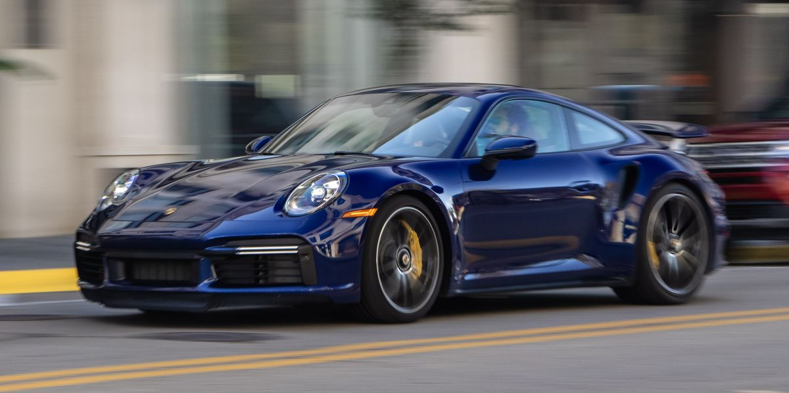

Porsche 911 Turbo S
The Porsche 911 Turbo S is the pinnacle of elegance and high-performance engineering in the venerable 911 range. The Turbo S is equipped with a 3.8-liter flat-six turbocharged engine that produces 590 lb-ft of torque and an astounding 640 horsepower. The Turbo S's powerful drivetrain, sophisticated all-wheel drive, and accurate eight-speed PDK transmission enable it to accelerate from 0 to 60 miles per hour in an impressive 2.6 seconds, displaying its exceptional acceleration and top-tier speed capabilities. Its precise steering and adjustable suspension contribute to its outstanding handling, which makes it an exhilarating and secure ride on both roads and racetracks. The 911 series is known for its aerodynamic design, which perfectly combines style and performance in the Turbo S.
Porsche Taycan Turbo S

With its remarkable speed and luxury, the Porsche Taycan Turbo S represents the future of high-performance electric automobiles. The Taycan Turbo S, which is powered by two electric motors, produces an astounding 750 horsepower and immediate torque to all four wheels. With the help of an advanced two-speed transmission, an all-wheel-drive system, and a strong electric drivetrain, the Taycan Turbo S can reach 60 mph in an incredible 2.4 seconds, demonstrating its exceptional acceleration and top-tier speed capabilities. Sharp handling, agile steering, and remarkable stability define the Taycan Turbo S's driving experience, which improves its performance on a variety of surfaces. Its futuristic exterior and opulent, technologically advanced interior highlight Porsche's dedication to both innovation and luxury.
Porsche Panamera Turbo S

In the world of grand tourers, the Porsche Panamera Turbo S represents a remarkable blend of great performance and opulent comfort. With its powerful 4.0-liter V8 twin-turbo engine, which produces 604 lb-ft of torque and around 620 horsepower, the Panamera Turbo S is quite the vehicle. The Panamera Turbo S's remarkable acceleration and top-tier speed capabilities are demonstrated by its powerful engine, which accelerates it from 0 to 60 miles per hour in an unbelievable 3.0 seconds when combined with an innovative all-wheel-drive system and a lightning-fast eight-speed dual-clutch automatic transmission. Thanks to precision steering and adaptable air suspension, the driving experience is characterized by superb balance, providing a powerful and opulent ride.